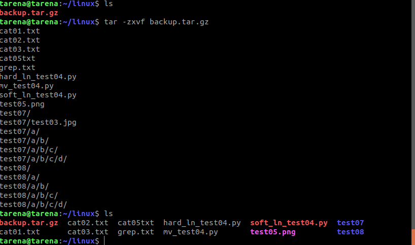

tar与gzip命令结合使用实现文件打包、压缩。
tar只负责打包文件,但不压缩,用gzip压缩tar打包后的文件,其扩展名一般用xxxx.tar.gz。
格式:
gzip [选项] 被压缩文件
gzip压缩
1
2
gzip解压
tar这个命令并没有压缩的功能,它只是一个打包的命令,但是在tar命令中增加一个选项 (- z) 可以调用gzip实现了一个压缩的功能,实行一个先打包后压缩的过程。
压缩用法:
tar -zcvf 压缩包包名 文件1 文件2 …
解压用法：
tar -zxvf 压缩包包名
-z :指定压缩包的格式为:file.tar.gz
tar压缩用法
tar解压用法
解压到指定目录:-C (大写字母“C”)
格式：
tar -zxvf 压缩文件名 -C 路径